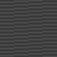

animated sprites test
This was a test of custom animated sprites in p5js, it uses a single spritesheet for each texture and flips through the different sprites to create the illusion of movement! This was originally created for a battle bots type game that I abandoned. To do it properly it really needed to be made in an actual game engine like unity or godot. I might be able to make it in p5js knowing what I do now, but back in 2020 I definitely could not. also I wouldve had to hire artists for it because the art proved a little too complex for me 😅
the spritesheets themselves look like this:   (I dont have any other examples of the programmer art I made for the project sadly)
(I dont have any other examples of the programmer art I made for the project sadly)
Made in 2020